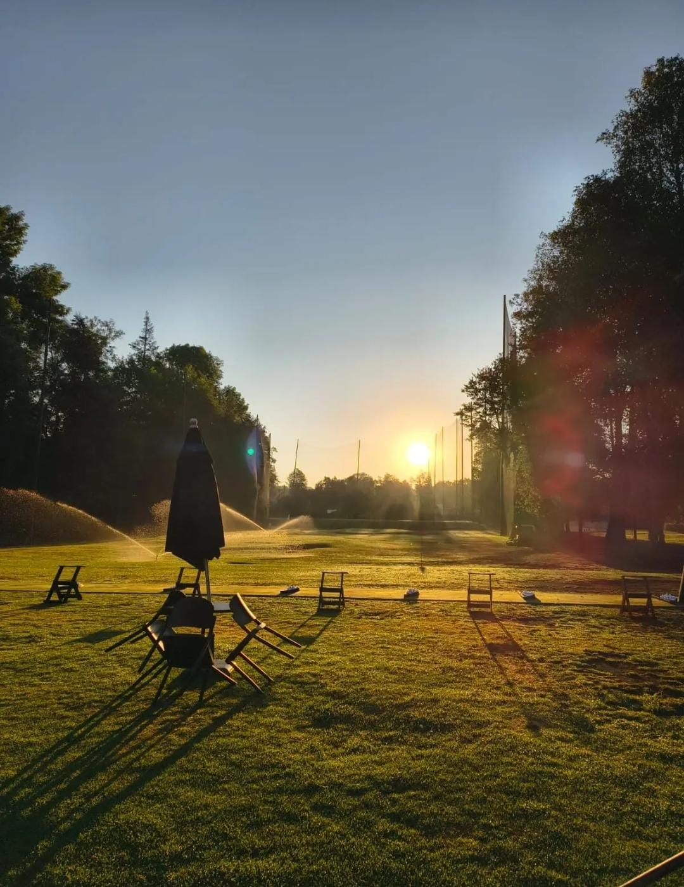
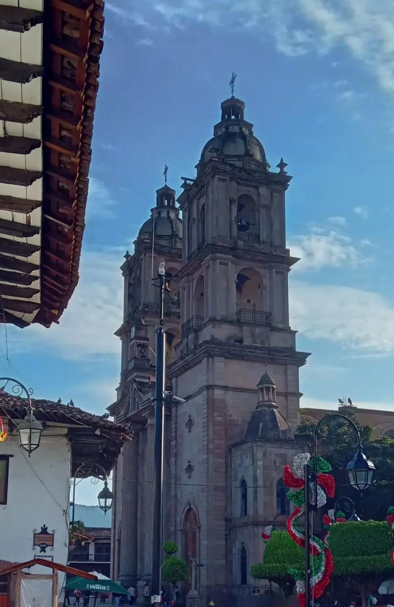
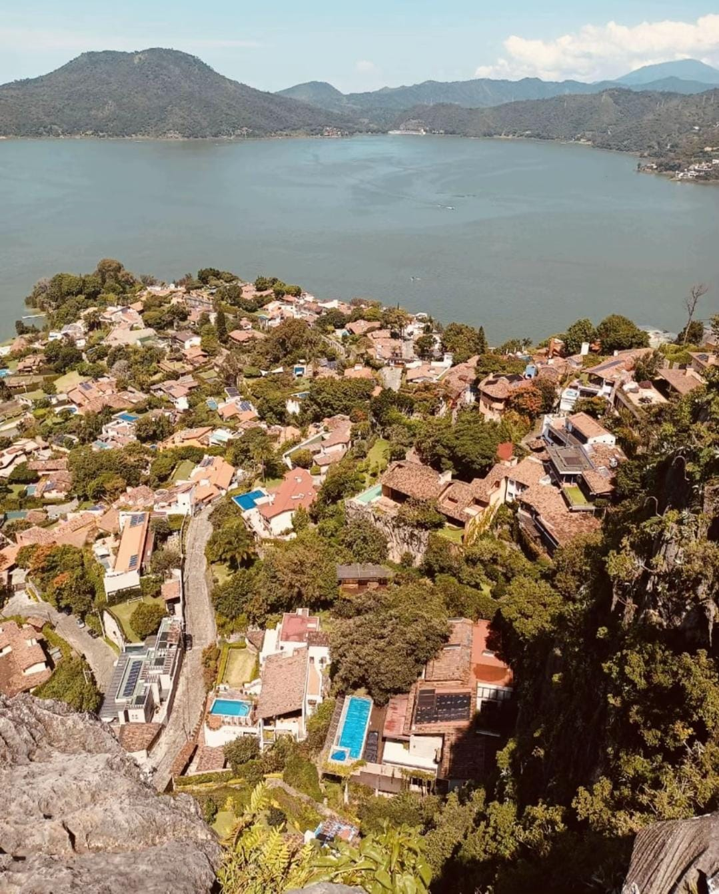
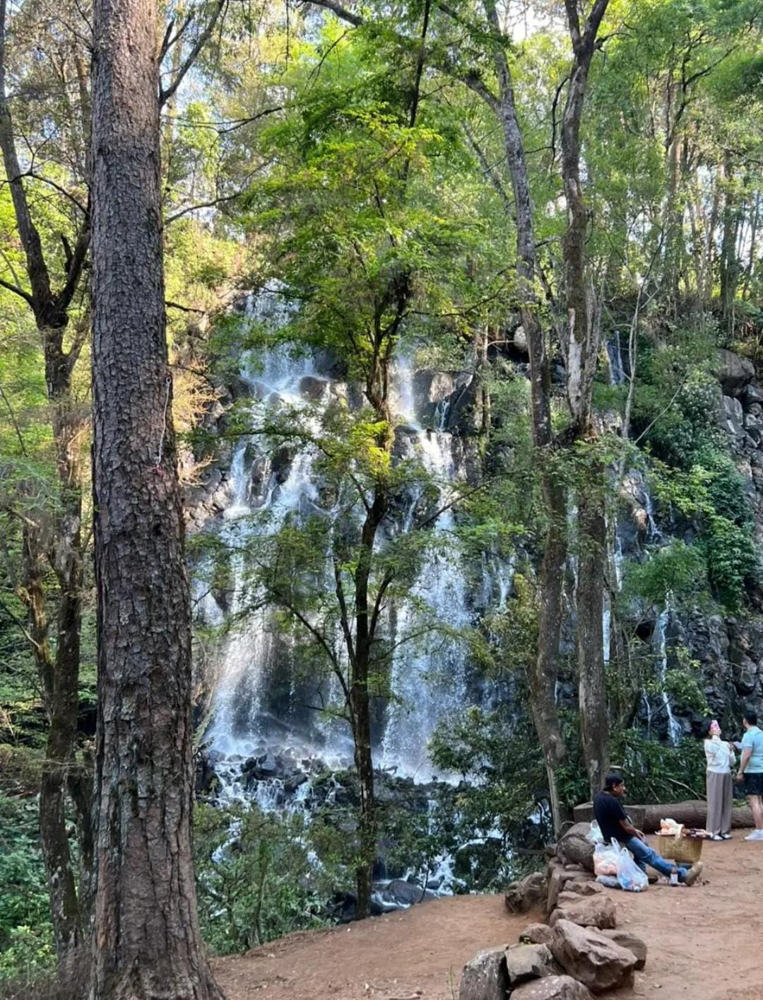
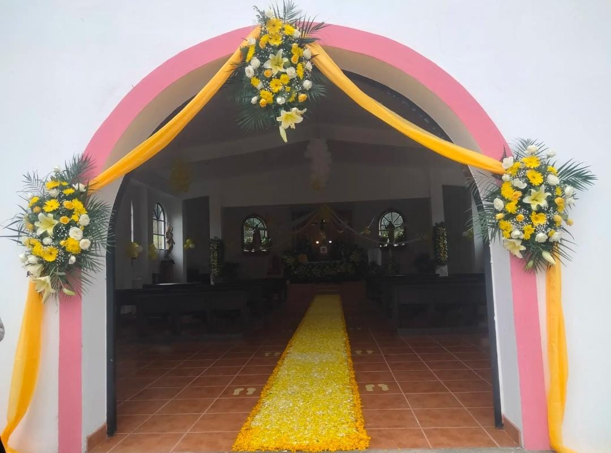

Conoce la magia de cada rincón y crea recuerdos inolvidables.

"Dirección: Vega del Río s/n, C.P.51200, Valle de Bravo
Esta foto del amanecer con los aspersores es del campo más famoso de Valle. Es un campo profesional de 18 hoyos, Par 72, de 6,663 yardas diseñado por Percy Clifford y rodeado de bosque de oyamel, pinos y encinos. Fue uno de los primeros clubes de golf en México y es considerado la Cuna del Golf en el país. Valle de Bravo en purépecha significa "lugar en el cielo" y Avándaro fue originalmente llamado Tenantongo.
Dato interesante: Avándaro se hizo mundialmente famoso en 1971 por el *Festival de Rock y Ruedas de Avándaro*, el Woodstock mexicano, donde tocó Three Souls in my Mind (ahora El Tri de Alex Lora). Hoy esa zona es de casas de descanso de gente de mucho dinero de la CDMX, a solo 90 minutos de la capital. El club además de golf tiene hotel, alberca techada, tenis y pádel. 0474

"Ubicación: Plaza Independencia número 1, Centro C.P.51200, Valle de Bravo"
Es el símbolo de Valle y el templo más alto de todo el Estado de México. Lo que ves en la foto son sus dos torres neoclásicas gigantes. Su historia es larguísima: en el siglo XVI los franciscanos construyeron una capilla de 2 naves, una para españoles y otra para indígenas. Esa capilla la entregaron al clero en 1615 y aún se conservan de esa época la pila bautismal y una talla del santo.
Dato curioso y que te sirve para la tarea: su construcción actual tardó más de 100 años. Empezó en 1880 y se terminó hasta 1994 gracias al párroco Don Ruffo Gutiérrez Zarza, con ayuda de todo el pueblo, niños y mujeres incluidos. Durante la Revolución, su campana mayor llamada "Santa Bárbara" recibió un metrallazo. Los vallesanos donaron sus anillos, cadenas y aretes de oro para fundirla y hacer la campana nueva que hoy se llama "San Francisco". Tiene oleografías italianas premiadas en Italia y cada 4 de octubre hacen la fiesta del patrono con mojigangas y yuntas adornadas con flores.

"Dirección: Camino a la Peña 114, colonia La Peña, C.P.51200, Valle de Bravo"
La foto aérea que tienes muestra justo eso, todas las casitas con teja roja y alberca entre los árboles, con el lago de fondo. La Peña es el mirador natural de Valle. Es una enorme roca monolítica de origen volcánico a 2,500 metros sobre el nivel del mar. Desde arriba ves todo el Pueblo Mágico, el lago y el bosque.
Dato interesante: Es el punto más famoso para hacer parapente y ala delta en México. Valle de Bravo es considerado uno de los 3 mejores lugares del mundo para volar por sus térmicas perfectas. La pista de despegue está justo ahí en La Peña y aterrizas a orillas del lago. Cada febrero se hace el Festival de las Almas y el Festiva de Vuelo, llegan pilotos de todo el mundo. Para subir puedes ir caminando 20 minutos desde el centro, en bici o en auto, y la entrada es gratis.

"Ubicación: Manzana 025, San Lorenzo, C.P. 51200, Valle de Bravo
Es la cascada más bonita y fotografiada de Valle. Tiene 35 metros de caída y le dicen "Velo de Novia" porque el agua cae como un velo blanco entre los árboles. Está dentro del Parque Velo de Novia, un Área Natural Protegida en San Lorenzo, a 15 minutos del centro.
Dato curioso: El agua viene del Río San Juan y cae sobre una pared de roca cubierta de musgo, por eso se ve así de blanca y esponjosa. Abajo forma una poza donde puedes meterte los pies. En el mismo parque está la Cascada Molino, más chiquita, y un camino con puestos de truchas, hongos y artesanías de la etnia mazahua que vive ahí. Si vas en temporada de lluvias de junio a octubre, la cascada se pone el doble de fuerte y espectacular, en secas baja mucho.

"Se encuentra en la comunidad de La Huerta San Agustín"
Las telas naranjas y el tapete amarillo de pétalos es de una fiesta patronal de San Agustín que es el 28 de agosto. Esa tradición de hacer tapetes de aserrín pintado y pétalos de cempasúchil es típica de Valle. La Huerta es una comunidad que está saliendo del centro hacia el sur, camino a Temascaltepec, muy tranquila y de gente que aún hace agricultura.
Dato interesante: Esta parroquia es relativamente nueva comparada con la del centro, pero guarda la esencia de las capillas de pueblo de Valle, fachadas blancas con colores vivos como rosa, muy diferente a la parroquia principal que es de cantera gris. En estas comunidades aún se hacen las "mojigangas", muñecos gigantes de 3 metros que bailan en las fiestas, y se quema el torito pirotécnico. Es un lugar que pocos turistas visitan pero que tiene la cultura más auténtica vallesana.
"Ubicación: Calle Rosales número 18, Avándaro, C.P.51200, Valle de Bravo"
La foto de noche con muchas velas es de la famosa "Noche de las Velas" o alguna misa de 12 de diciembre. Esta iglesia está en Avándaro, a 5 km del centro, en la zona más exclusiva donde están las cabañas y el Club de Golf. A diferencia de la parroquia del centro que es del siglo XVII, esta es más moderna, de los años 70s-80s, construida para dar servicio a los fraccionamientos de Avándaro que crecieron mucho.
Dato curioso: En Avándaro todo gira alrededor de esta parroquia en diciembre. Cada 12 de diciembre hacen una procesión enorme desde Valle hasta Avándaro con la Virgen de Guadalupe, y en Semana Santa hacen la procesión del silencio con velas, que es justo lo que se ve en tu imagen. La calle Rosales donde está es la calle principal de Avándaro, llena de restaurantes de trucha, pan de elote y puestos de fresas con crema. De ahí estás a 2 minutos del lago y del malecón para pasear en lancha.